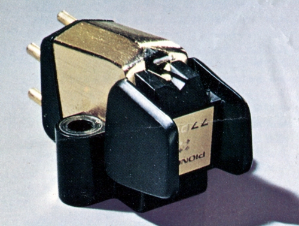
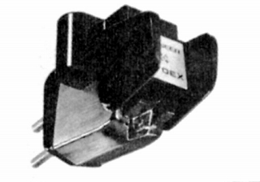
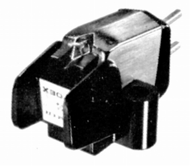

PC-770EX



■価格 20,000円
■発電方式 MM型
■出力電圧 2.3mV
/1kHz 5cm/sec
■針圧 1.5〜2.5g（最適
2.2g）
■再生周波数帯域 10-60,000Hz
■チャンネルセパレーション 30dB以上/1kHz
22dB以上/100-15,000Hz
■チャンネルバランス 0.5dB以内(1kHz)
■コンプライアンス 25×10-6cm/dyne（スタチック）/14×10-6cm/dyne（水平
ダイナミック
■負荷抵抗 30〜250kΩ(CD-4推奨100kΩ)
■直流抵抗
■出力インピーダンス 2kΩ
■針先 0.2�oパテ・マルコニータイプ
■自重 5.1g
■交換針 PN-770EX
■発売 1973年頃
■販売終了
1977年頃
■備考 垂直トラッキング角 15度
価格は1973年頃のもの
1974年には25,000円 交換針
PN-770EX(14,000円)
外経0.4�o、肉厚40μのアルミ合金カンチレバー
振動系実効質量0.4mgのCD4対応機
ノブの先端を開け、針先の視認性を高めたデザイン
振動系の支持は「ナイロン6」を使用したサスペンションワイヤー方式
パイオニアのインデックスへ